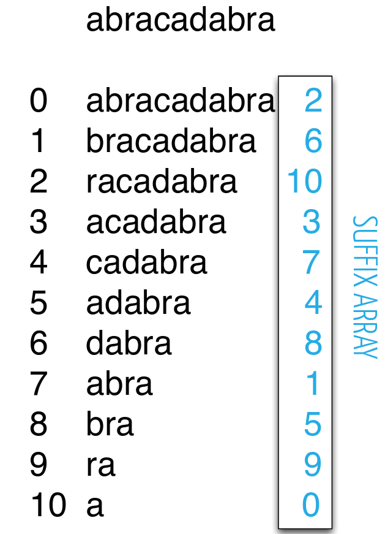

Copyright ©2018. All rights reserved. Created by CoDev
Το Suffix Array είναι μία φοβερά χρήσιμη προχωρημένη δομή δεδομένων. Δίνοντάς της ένα μεγάλο κείμενο (ή και πολλά κείμενα) καταφέρνει:
Οπτικά είναι απλούστατο και μοιάζει σαν την παρακάτω εικόνα: 
Στην παραλλαγή που θα δούμε εμείς, εκτός από την ταξινομημένη θέση του κάθε suffix, κρατάμε και την ταξινομημένη του θέση εάν από κάθε suffix κρατούσαμε μόνο τα πρώτα 2k γράμματα, για κάθε k. Αυτές είναι logN τιμές για κάθε suffix, και ενώ είναι βοηθητικές για την κατασκευή, τις κρατάμε γιατί βοηθούν και στην απάντηση των ερωτημάτων που αναφέραμε.
Ο χώρος που απαιτεί είναι O(NlogN) λόγω των βοηθητικών τιμών. Αν δε θέλουμε να απαντήσουμε σε αυτά τα ερωτήματα, και θέλουμε μόνο την ταξινόμηση, γίνεται σε O(N) χώρο. Ο χρόνος που χρειάζεται είναι O(Nlog2N), και πέφτει σε O(NlogN) αν γράψουμε δική μας O(N) Counting Sort, την οποία θα τρέξει logN φορές ο αλγόριθμος.
Το Stanford δίνει μία εξαιρετική παρουσίαση της δομής, με λυμένα παραδείγατα από διαγωνισμούς. Τη διαβάζουμε παράλληλα με τις διαφάνειες παρουσίασης εκτέλεσης του αλγορίθμου κατασκευής (θυμόμαστε αυτό). Εν ολίγοις:
Εάν σε κάποια στιγμή μας ενδιαφέρουν τα πρώτα 4 γράμματα από κάθε suffix, η πρώτη στήλη αντιπροσωπεύει μία τιμή για τα πρώτα 2 γράμματα του suffix, ενώ η δεύτερη στήλη για τα επόμενα 2. Η τρίτη στήλη απλώς μας δείχνει από πού ξεκινάει το suffix που μας ενδιαφέρει. Συνεπώς ταξινομώντας (ως pair) τις δύο στήλες, μπορούμε να βγάλουμε μία καινούρια τιμή (την ταξινομημένη θέση εάν δεν είχαμε ισότητες) για τα 4 γράμματα, κι έτσι σχηματίζουμε ένα pair για τα 8 γράμματα, κλπ κλπ.
Βεβαίως στο visualgo μπορείτε δείτε την εκτέλεση και σε δικά σας παραδείγματα εισόδου.
Υποσημείωση (πλήρως άχρηστη για διαγωνισμούς): Οι θεωρητικοί έχουν καταφέρει να λύσουν αυτά τα προβλήματα βέλτιστα - γραμμικός χώρος, γραμμικός χρόνος κατασκευής (αν το αλφάβητο είναι σταθερού μεγέθους, όπως συμβαίνει στους διαγωνισμούς), Ο(1) απάντηση σε ερωτήματα. Η λύση αυτή είναι το Suffix Tree του Ukkonen. Αργότερα βρέθηκαν τρόποι να πετύχουμε τα παραπάνω και για Suffix Arrays (όπως καταλαβαίνετε υπάρχει στενή σύνδεση των 2 δομών). Όλα αυτά βεβαίως ξεφεύγουν κατά πολύ από ό,τι χρειαζόμαστε για διαγωνισμούς.
Πολλά από τα παρακάτω δε λύνονται βέλτιστα με suffix array. Παρόλα αυτά είναι αρκετό για να μας δώσει τουλάχιστον 70% των βαθμών!